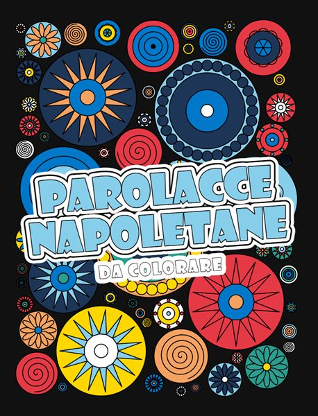
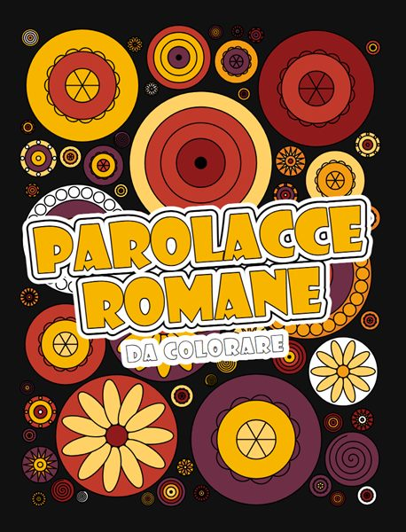
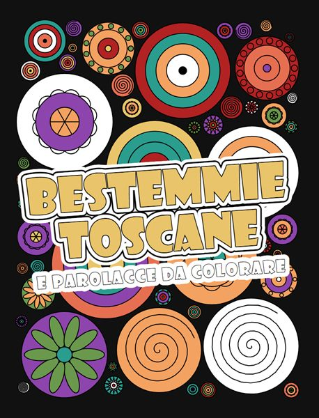
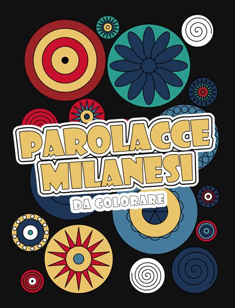
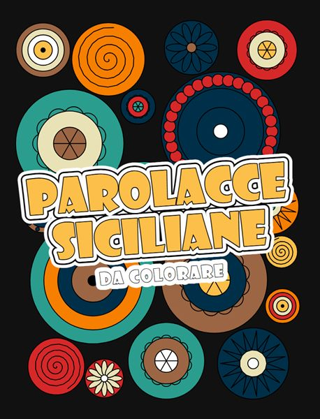
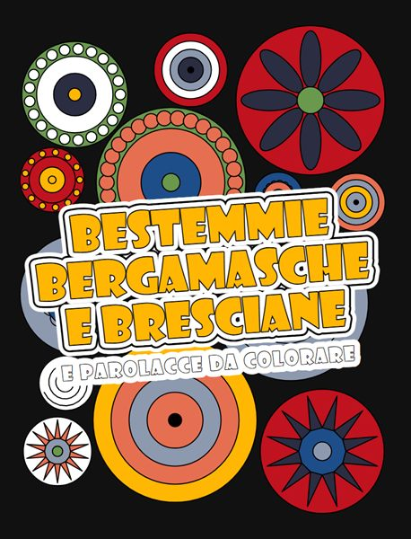
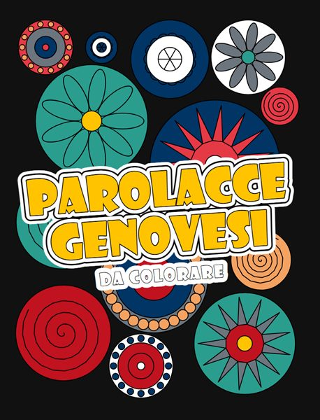
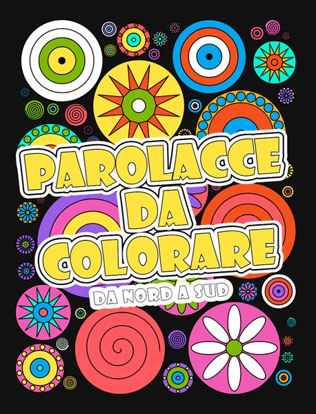

Flavia Fottuta: le parolacce d'Italia, da colorare
Benvenuti nel regno del turpiloquio di folklore. Flavia Fottuta raccoglie le espressioni più colorite dei dialetti italiani, dal «pirla» milanese alla «cazzimma» napoletana, e le trasforma in libri da colorare antistress per adulti, con la traduzione in italiano sotto ogni scritta.
Su questo sito trovi il catalogo completo dei libri, disponibili su Amazon, e un piccolo dizionario delle parolacce dialettali: per ogni espressione il significato letterale, l'origine quando la conosciamo, come si usa e una nota ironica. Poi c'è un quiz per scoprire quanto ne sai davvero e due tavole da colorare gratis da stampare a casa. Niente bestemmie, niente insulti contro nessuno per quello che è: solo il buon vecchio sfogo dialettale, quello delle nonne e delle osterie, che fa ridere prima ancora di colorare.

Novità per la coppia
Buoni proibiti: 50 coupon piccanti da staccare
Flavia non colora solo parolacce. Il suo nuovo carnet è per chi ha qualcuno a cui regalare seduzione, massaggi, giochi e fantasie, un buono alla volta. Allusivo, mai volgare: il regalo che non si apre davanti ai parenti.
Chi è Flavia Fottuta?
Nessuno lo sa, ed è meglio così. Flavia Fottuta è uno pseudonimo: dietro c'è qualcuno che ha passato troppe ore in coda in tangenziale e ha deciso di trasformare la frustrazione in arte. La sua missione è metà sfogo e metà archivio: i dialetti stanno sparendo, ma le parolacce in dialetto sono l'ultima cosa che dimenticheremo.
Non concede interviste, non rivela il proprio indirizzo e colora sempre fuori dai bordi.
I libri di Flavia Fottuta
I libri da colorare contengono 40 tavole con una scritta grande da colorare, circondata da mandala e motivi decorativi, con la traduzione in italiano. Le tavole sono stampate su un solo lato: si possono staccare, appendere o regalare. Libri per adulti, non adatti ai bambini (né alla suocera).
-
Buoni proibiti
50 coupon piccanti da staccare per la coppia: seduzione, massaggi, giochi e fantasie. Allusivo, mai volgare: il regalo che non si apre davanti ai parenti.

Parolacce napoletane da colorare
40 tavole antistress con le espressioni più colorite del napoletano e la traduzione in italiano, per chi non è nato all'ombra del Vesuvio.

Parolacce romane da colorare
40 tavole antistress con il meglio del romanesco, dagli insulti da raccordo alle maledizioni più fantasiose, con traduzione.

Bestemmie e parolacce venete da colorare
40 tavole con le espressioni più colorite del Veneto, dall'osteria alla nonna, con la traduzione per i foresti.

Bestemmie e parolacce toscane da colorare
40 tavole con il vernacolo toscano più sanguigno, dal bar agli insulti più eleganti d'Italia, con traduzione.

Parolacce milanesi da colorare
40 tavole con le espressioni più colorite del milanese, dalla tangenziale alla metropolitana all'ora di punta.

Parolacce siciliane da colorare
40 tavole con le esclamazioni più teatrali del siciliano, dal mercato alla piazza, con la traduzione per chi non è nato sotto l'Etna.

Bestemmie e parolacce emiliane e romagnole da colorare
40 tavole dalla via Emilia alla Riviera, tra umarell, pataca e osterie, con la traduzione per i foresti.

Bestemmie e parolacce bergamasche e bresciane da colorare
40 tavole dalle valli di Bergamo e Brescia, dove «pota» è una filosofia di vita.

Parolacce genovesi da colorare
40 tavole dal porto ai caruggi, per chi ha sempre un belìn e un mugugno pronti.

Parolacce sarde da colorare
40 tavole con le espressioni più colorite della lingua sarda, per chi è arrivato col traghetto.

Bestemmie d'Italia
Il giro d'Italia in 40 tavole: quattro espressioni per ciascuna di dieci regioni. Copertina rigida, da regalare.

Parolacce da colorare
Quaranta parolacce italiane da Nord a Sud, dalle più classiche alle più regionali, da colorare con tutta la rabbia che serve.
Vedi tutto il catalogo su Amazon →
Il dizionario delle parolacce dialettali
Scegli un dialetto: per ogni espressione trovi traduzione, uso e nota ironica, con ricerca istantanea e indice alfabetico.
- Parolacce napoletane36 espressioni spiegate · es. «Cazzimma»
- Parolacce romane38 espressioni spiegate · es. «Li mortacci tua»
- Parolacce venete26 espressioni spiegate · es. «Ostrega!»
- Parolacce toscane28 espressioni spiegate · es. «Bischero»
- Parolacce milanesi30 espressioni spiegate · es. «Pirla»
- Parolacce siciliane30 espressioni spiegate · es. «Minchia!»
- Parolacce emiliane e romagnole23 espressioni spiegate · es. «Umarell»
- Parolacce bergamasche e bresciane26 espressioni spiegate · es. «Pota!»
- Parolacce genovesi25 espressioni spiegate · es. «Belìn!»
- Parolacce sarde25 espressioni spiegate · es. «Ajò!»
Gioca e colora
Indovina la parolaccia
Dieci domande a caso da tutti i dialetti: sai cosa vuol dire «barlafus»? E «pibincu»?
Inizia il quizTavole gratis da stampare
Due tavole originali in stile mandala, con frasi soft per tutta la famiglia (o quasi): «Mannaggia!» e «Ma va' a quel paese».
Scarica le tavole